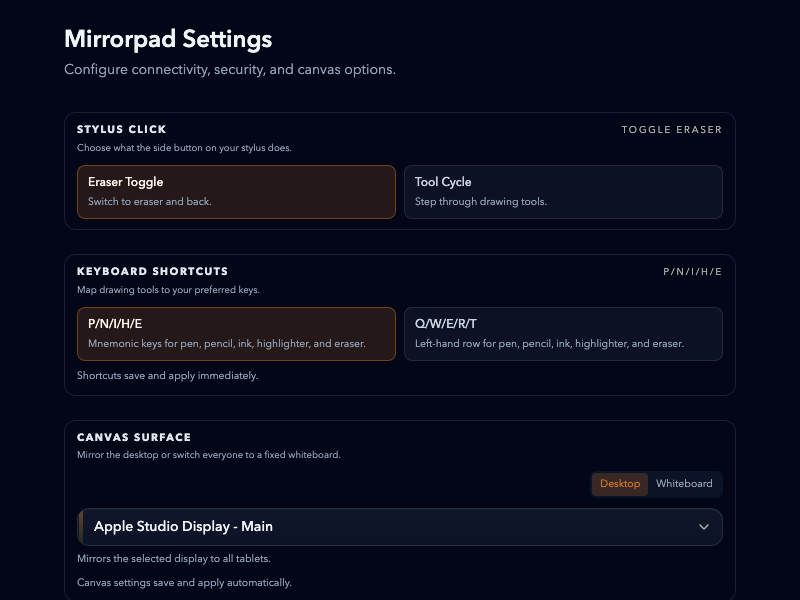

Transform Your Tablet Into a Pro Canvas
Experience zero-latency drawing over any macOS app. Wire-free, subscription-free, and uncompromisingly precise.
Built for Professionals
Engineered for creators who demand zero compromise on speed, precision, and privacy.
Invisible Canvas
Draw directly over any window. Your tablet acts as a transparent glass layer across your entire macOS workspace.
Lightning Fast
Engineered for speed. Enjoy a near-instantaneous drawing experience that effortlessly keeps pace with your rapid strokes.
Pixel-Perfect Precision
Native pressure and tilt sensitivity ensure your digital strokes feel exactly like real ink on paper.
Total Privacy
100% local streaming with password protection. No cloud limits, no accounts, and your data never leaves your local network.
Browser-Based
Skip the app store. Simply open a secure URL on any modern tablet browser to connect instantly.
Floating HUD
Access brushes, colors, and essential tools instantly via a customizable on-screen display.
Comprehensive Desktop Control
Configure everything from network ports to secure local passwords and hardware display targeting—all directly from the native macOS desktop app.

Start Creating in Seconds
Skip the complex setup and jump straight into your creative workflow.
Start the App
Open Mirrorpad on your Mac to instantly create a transparent overlay across your screens.
Connect Your Tablet
Scan the secure QR code or visit the local URL using your iPad or Android browser.
Start Drawing
Pick your brush, adjust your settings, and turn your ideas into reality without limits.